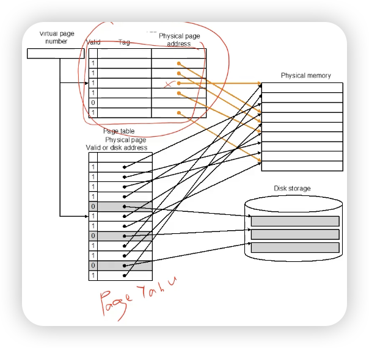
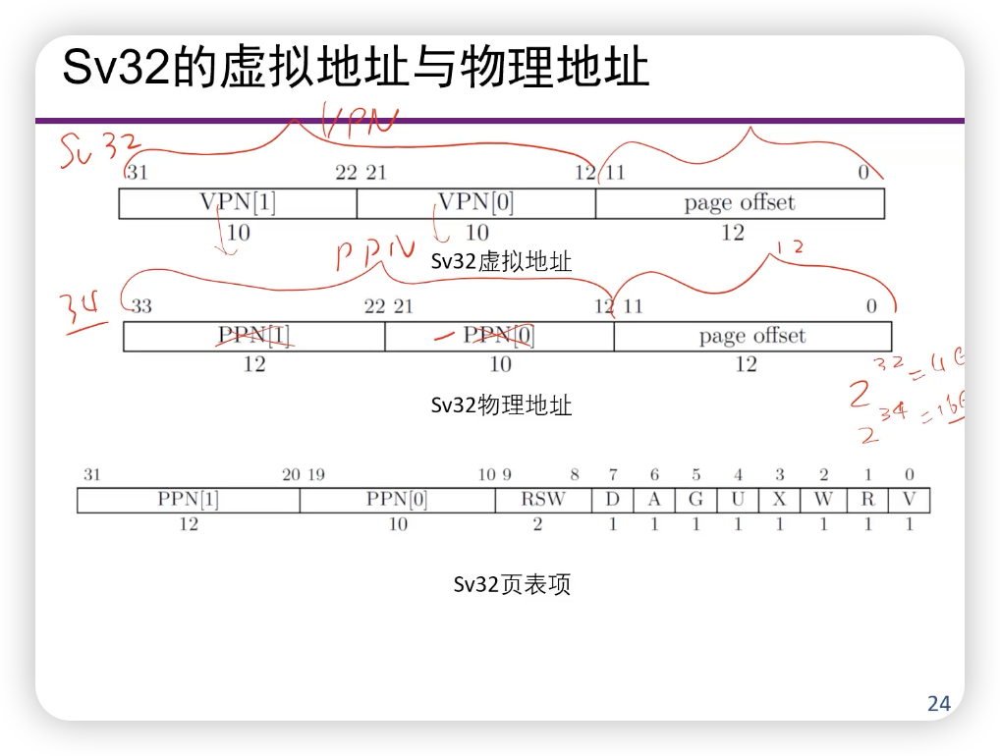
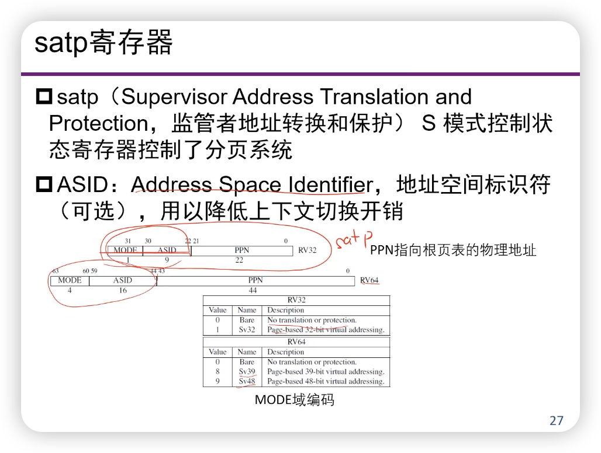

虚拟内存
为什么需要虚拟内存？¶
物理内存访问¶
虚拟内存访问¶
两个问题¶
- 如果程序的工作集的大小大于物理内存大小，程序还能执行吗？
- 缓存的思想（虚拟化）
- 如果多个程序共享使用，那么
- 程序员在编程时，怎么知道在哪儿分配内存？
- 多个程序需要共享时，怎么办？
- 多个程序同时执行时，某进程不想让另一个进程看到或者修改本进程的内容，怎么办？
- 思想：程序员编程使用的空间和程序运行空间相互独立
- 独立的逻辑地址空间
- 实现内存共享
- 实现内存的保护
虚拟存储器的目的¶
虚拟内存与Cache的比较¶
- Cache一般一个line是64B，页表一般一个页为4KB
页表¶
页式存储管理¶
- 将主存和虚存划分为固定大小的页
- 以页为单位进行管理和数据交换
- 虚地址=虚页号+页内地址
- Virtual Address (VA)
- Virtual Page Numbers (VPN)
- Virtual Page Offset (VPO)
- 实地址=实页号+页内地址 (PPO = VPO)
- 通过页表进行管理
- 页表基地址寄存器（在CPU里，例如satp，cr3）（CPU先知道页表在哪里）
- 实页号
- 控制位
- 利用虚页号（+页表基地址）来进行索引
页表大小¶
- 与虚页数直接相关，但是
- 虽然理论上每个进程的逻辑空间很大，但其实大部分应该是不活跃的
- 实际调入到内存的内容不可能超过物理存储空间
- 如何减少页表本身所占的空间
- 层次页表（hierarchical page table）
- 反转页表（inverted page table）
- 按照物理页来映射（？？？）
页式虚拟存储器的访问过程¶
- 得到程序给出的虚地址；
- 由虚地址得到虚页号
- 访问页表，得到对应的实页号；
- 若该页已经在内存中，则根据实页号得到实地址，访问内存；
- 否则，启动I/O，读出对应页装入主存，再进行访问（Page fault）
快表（TLB：转换旁路缓冲）¶
- 是一个硬件，在MMU里面
- 转换旁路缓冲（TLB，Translation Lookaside Buffer），加快地址的转换
- TLB缺失将造成：
- 流水线停止
- 通知操作系统
- 读页表
- 将表项写入TLB
- 返回到用户程序
- 重新访问
- 尽量减少缺失：
- 多路组相联
- 尽量提高TLB的容量


- 所以，现在访存包括了两个步骤
- 拿到Physical Address
- 用Physical Address去访问真正的内存空间
页面大小的选择¶
- 减少内部碎片
- 缩小页面大小可以减少内部碎片
- 但是：需要更大的页表
- 趋势：增大页面大小
- RAM价格下降，内存储器容量增大
- 内存和外存性能差距增大
- 程序员需要更大的地址空间
- 目前：页面大小为4K左右
页面替换算法¶
- 最近最少使用（LRU）
- 将页帧按照 最近最多使用 到 最近最少使用 进行排序，再次访问一个页帧时，将该页帧移到表头，替换时将表尾的页帧换出。
- 一点改进：替换出其中一个“干净”的页帧。
- dirty：这个页已经被修改过了，需要写回
基于页面的虚拟内存¶
Sv32的虚拟地址和物理地址¶
- 用到了二级页表
- 虚拟地址：32位，物理地址：34位
- 2^34=16GB，为了支持16GB

Sv32 页表项（PTE：page table entry）¶
Sv39的虚拟地址和物理地址¶
- 三级页表
satp寄存器¶
- satp（Supervisor Address Translation and Proection）S模式控制状态寄存器，控制了分野系统
- ASID（Address Space Identifier）地址空间标识符，用以降低上下文切换开销（可以理解为进程号）

- satp的初始化：
- M模式的程序在第一次进入S模式之前会把0写入satp，禁止分页
- 然后S模式的程序在初始化页表以后会再次进行satp寄存器的写操作
虚拟地址到物理地址的转换¶
TLB¶
- 如果操作系统修改了页表，TLB就会变的不可用
- sfence.vma通知处理器，软件可能已经修改了页表，处理器可以刷新TLB
- rs1：哪个虚拟地址对应的转换被修改了
- rs2：被修改页表的地址空间标识符（一般相当于进程）ASID
- 两个都是x0，会整个刷新
段式存储管理¶
- 变长的，不能直接索引

优点：
- 段的分界与程序和数据的自然分界相对应
- 易于编译、管理、修改和保护，便于多道程序共享
- 段长动态可变
- 段起点、终点不定
- 空间分配困难，容易产生碎片
32位x86虚实地址的转换¶
- 虚地址（逻辑地址）
- 程序员给出的虚拟地址，格式为段号+段内偏移（16位+32位），每段大小不超过4GB，一共不超过2^14段（段号中有两位用来表示段优先级）
- 实地址：
- 32位的实际内存地址
Review of Symbols¶
- Basic Parameters
- N = 2^n: 虚拟地址数量
- M = 2^m: 物理地址数量
- P = 2^p: Page size (bytes)
- Components of the virtual address (VA)
- TLBI: TLB index
- TLBT: TLB tag
- VPO: Virtual page offset
- VPN: Virtual page number
- Components of the physical address (PA)
- PPO (same as VPO)
- PPN
- CO: Byte offset within cache line
- CI: Cache index
- CT: Cache tag
- 注意：TLBI，TLBT是对逻辑地址的VPN部分再次划分，目的是为了像查Cache一样查TLB，CT/CI/CO同理。
- 这张图可以分成两个部分
- 先得到PA
- 访问Page Table是操作系统做的
- 访问TLB是硬件层面做的
- 然后用PA去访存
- 先得到PA
Cute Trick for Speeding Up L1 Access¶
- Virtually indexed, physically tagged
- CI在VPO里已经知道了，可以先拿去算
- 等物理地址获取好了，再去进行Tag的比较
作者: